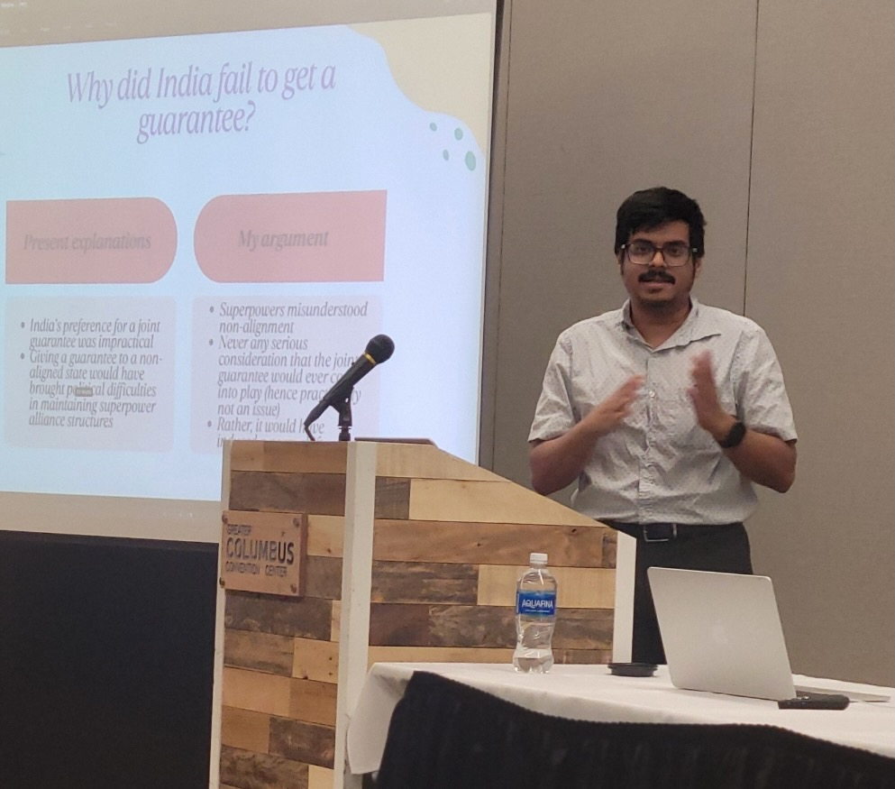

PhD Candidate, Political Science
Soumyadeep Bidyanta
I study nuclear proliferation, cyber conflict, and the politics of emerging technology. PhD Candidate, School of Public and International Affairs, University of Cincinnati.

I am a PhD candidate in Political Science at the School of Public and International Affairs, University of Cincinnati, with an expected defense date of April 2027. My research examines the causes of nuclear proliferation through a mixed-methods approach combining quantitative analysis, machine learning, and historical case studies, alongside work on cyber conflict, deterrence, and public attitudes toward escalation in cyberspace. I am on the market for assistant professor positions in nuclear security, cybersecurity policy, and international relations. I can teach classes in International Security, International Organizations, as well as a full sequence of quantitative methods (including survey methods).